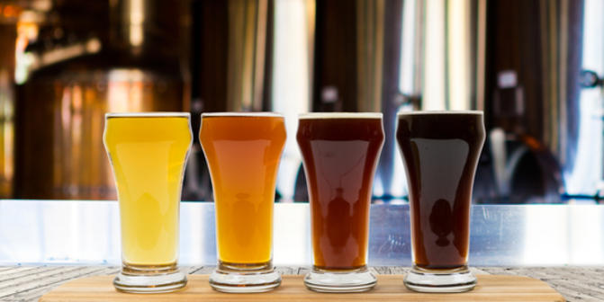

Piwo jakie jest każdy wie. Ma być złote, jasne, pełne, z pianą na dwa palce. Tak przynajmniej było 5 lat temu. Wraz z nadejściem nowej fali piwowarstwa rzemieślniczego, w społecznym odbiorze piwo zaczęło na szerszą skalę być postrzegane jako o wiele bardziej wielowarstwowy trunek. Warto zastanowić się chwilę i zdefiniować jak należy rozumieć piwo rzemieślnicze i browar rzemieślniczy. Czy przypadkiem wszystkie, które za takie się podają są nimi w rzeczywistości, czy nie udają ich. Jest to w obecnej chwili bardzo popularne sformułowanie, nastała moda na piwa rzemieślnicze. Coraz więcej osób wchodzi w to, bo warzenie to świetna pasja, ale też i dobry biznes.
Zdecydowana większość produkcji piwa, co nikogo nie powinno dziwić, ma miejsce w dużych browarach przemysłowych, piwa z tych browarów mają trafić w gusta jak najszerszej grupy odbiorców, stąd ich smak musi być, że tak powiem powszechnie akceptowalny, a przy takiej skali produkcji każda złotówka ma znaczenie, stąd szereg rozwiązań dążących do ograniczenia wydatków, co stanowi ograniczenie przy eksperymentach smakowych. Spróbowanie piwa rzemieślniczego to droga w jedną stronę, docenisz jakość, piwo posmakuje i już nie wrócisz do piw przemysłowych. To wszystko mimo wyższej ceny, która wynika z jednostkowego kosztu produkcji piwa, wiadomo na mniejszą skalę więcej to kosztuje, a dodatki do piw rzemieślniczych są doprawdy wyszukane.
W Polsce jest aktualnie 140 fizycznych browarów plus wiele inicjatyw kontraktowych. Browary regionalne, rzemieślnicze i restauracyjne w sumie według różnych obliczeń zajmują 5-10% rynku, a statystyczny Polak pije przeciętnie 100 litrów piwa na głowę rocznie i coraz częściej szuka nowych smaków.
Powstawanie małych/lokalnych browarów nie jest wcale nowością, kiedyś Polska była ich pełna, naturalne było, że w mieście jest browar, super że taka sytuacja znów zaczyna mieć miejsce.